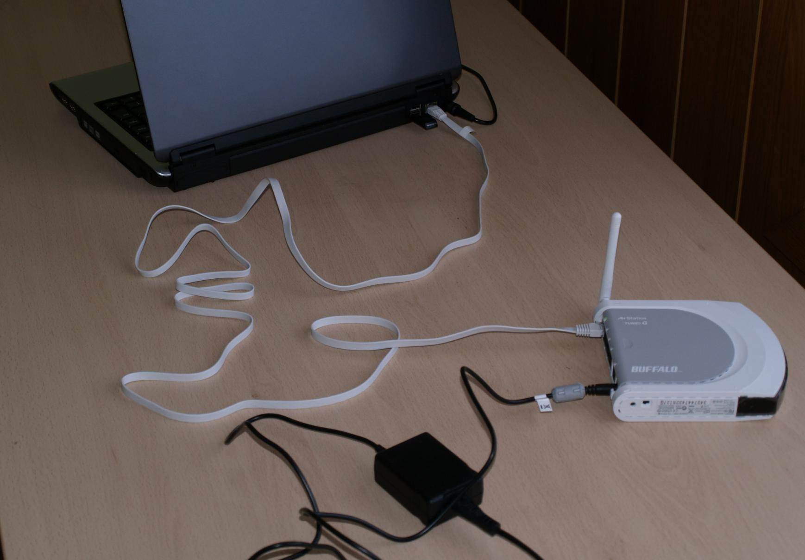
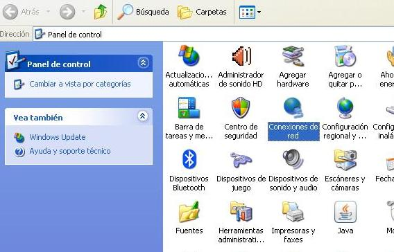
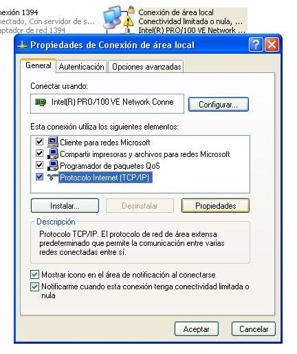
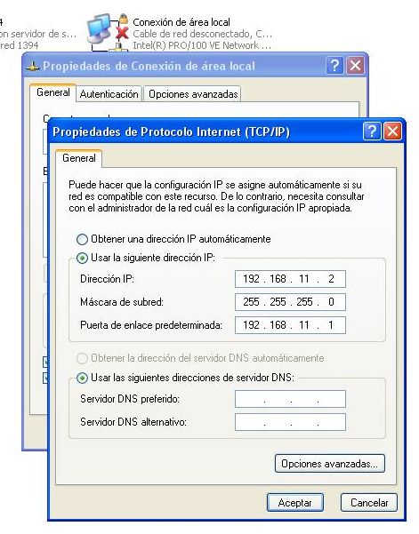
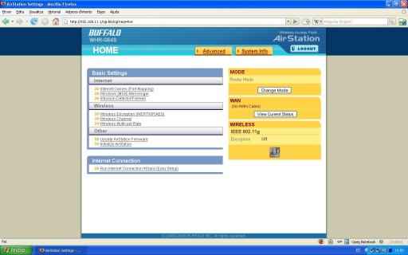
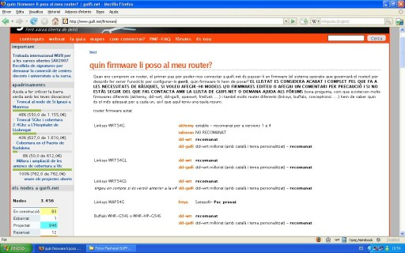
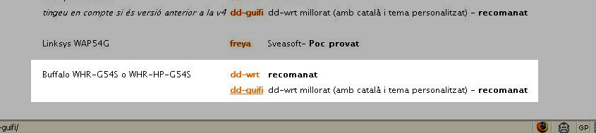
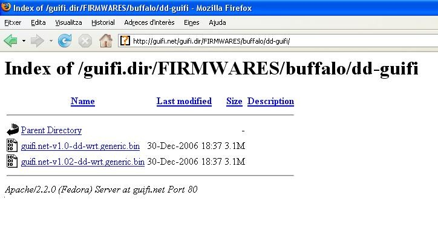

Modificar el firmware del router i buscar un punt d'accés de Guifi.net
Objectius
En aquest pas veurem com preparar el nostre router per tal de poder-nos
connectar a la xarxa de guifi.net. En el primer cas veurem com modificar un
Buffalo WHR-G54S ja que, si hem seguit la primera part de la guia, és el que hem
especificat a tot arreu. En el segon cas veurem com modificar un Linksys
WRT-54GL ja que probablement és el més conegut i usat per aquest tipus de coses.
Per últim, buscarem un punt d'accés per conectar-nos a la xarxa Guifi.net.
Com que hem de treballar sobre el nostre router, el treiem de la caixa
estanca i anem a un lloc més còmode per facilitar el treball.
AVÍS IMPORTANT: La
modificació del firmware comporta uns riscos, tals com la inutilització del
router si no es realitza correctament. Es aconsellable que aquest pas es
realitzi saben els que es fa i seguint al peu de la lletra els passos que venen
a continuació. En cas de dubte i/o por a inutilitzar el router deixeu que algú
amb experiència en el tema us doni un cop de mà. Els autors de la guia no es
responsabilitzen dels danys que pugui patir el vostre router.
Procediments per al Buffalo WHR-G54S
Connectem el router amb el transformador i l'endollem. Agafem el cable
de xarxa i el connectem, un extrem a l'ordinador i l'altre a un dels ports que
té el router (en aquest cas el primer).

Ara hem de configurar l'interfície de xarxa del nostre ordinador per tal de
poder comunicar-nos amb el router. Per això anem a l'apartat Conexiones de
red del Windows, que trobarem al Panel de control.

Veurem varies icones, però només ens interessa la Conexión de area
local. Cliquem amb el botó dret del ratolí sobre de l'icona i
seleccionem Propiedades.
Dins de les Propiedades de Conexión de area local, seleccionem Protocolo Internet (TCP/IP) i cliquem Propiedades un
altre cop.

Aquí seleccionarem Usar la siguiente dirección IP i escriurem els
següents camps:
- Dirección IP: 192.168.11.2
- Mascara de subred: 255.255.255.0
- Puerta de enlace: 192.168.11.1

Després cliquem aceptar i finalment cerrar. En
aquest punt, si teniu Windows XP, hauríeu d'observar un núvol informatiu a la
part inferior dreta, informant-vos de que s'ha establert una connexió de xarxa.
Ara, si obrim el navegador web i entrem l'adreça 192.168.11.1, ens apareixerà la
pantalla inicial de configuració del router.

Tot i que aquest router disposa d'un apartat per actualitzar el firmware a
través del web, no ens serveix, ja que els routers Buffalo tenen el firmware
encriptat i això impedeix actualitzar el router si no és amb un firmware del
fabricant.
Per aquest motiu farem servir un aplicatiu anomenat TFTP. Afortunadament no hem
d'instal·lar cap programa ja que el Windows XP ja disposa del protocol TFTP de
sèrie.
Abans però, necessitem descarregar el firmware que volem posar al nostre router.
Si anem a la pàgina www.guifi.net/firmware ens donarà unes recomanacions depenent del router que tinguem.

En aquest cas (router Buffalo WHR-G54S) ens recomanen el DD-guifi o el DD-WRT.
Triarem el DD-guifi i clicarem a l'enllaç. Ara ens apareixerà la pàgina amb els
firmwares.

Clicarem a la versió més nova (guifi.net-v1.02-dd-wrt.generic.bin) i el
guardarem al disc.
